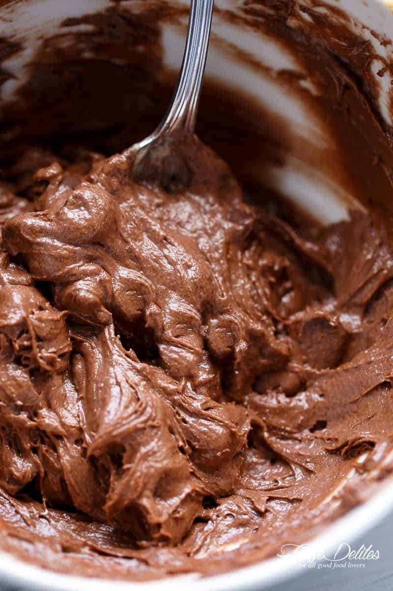
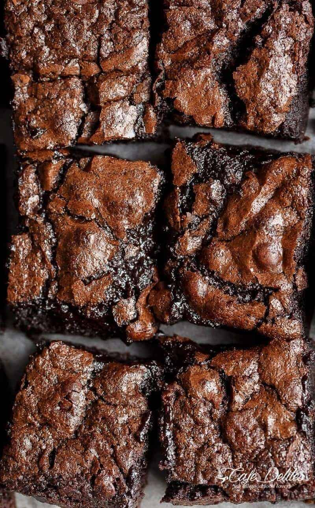

Best Fudgy Brownies Recipe

Recipe for the Best Fudgy Cocoa Brownies with crackly tops
So simple but SO delicious, they are gone in seconds!

Ingredients
- 1/2 cup unsalted butter, melted and HOT
- 1 tablespoon cooking oil
- 1/8 cup superfine sugar
- 2 large eggs
- 2 teaspoons pure vanilla extract
- 1/2 cup all purpose
- 1/2 cup unsweetened cocoa powder
- 1/4 teaspoon salt
Instruction
- Preheat oven to 175°C
- Lightly grease an 8-inch square baking pan with cooking oil spray. Line with parchment paper
- Combine hot melted butter, oil and sugar together in a medium-sized bowl. Whisk well for about a minute. Add the eggs and vanilla
- Sift in flour, cocoa powder and salt. Gently fold the dry ingredients into the wet ingredients until JUST combined
- Pour batter into prepared pan, smoothing the top out evenly.
- Bake for 20-25 minutes. If testing with a toothpick, the toothpick should come out dirty for fudge-textured brownies